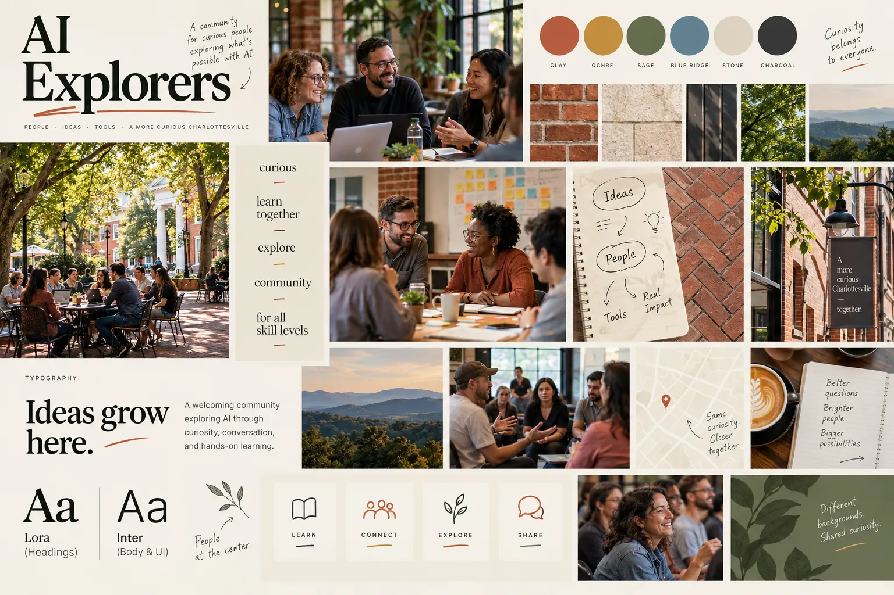
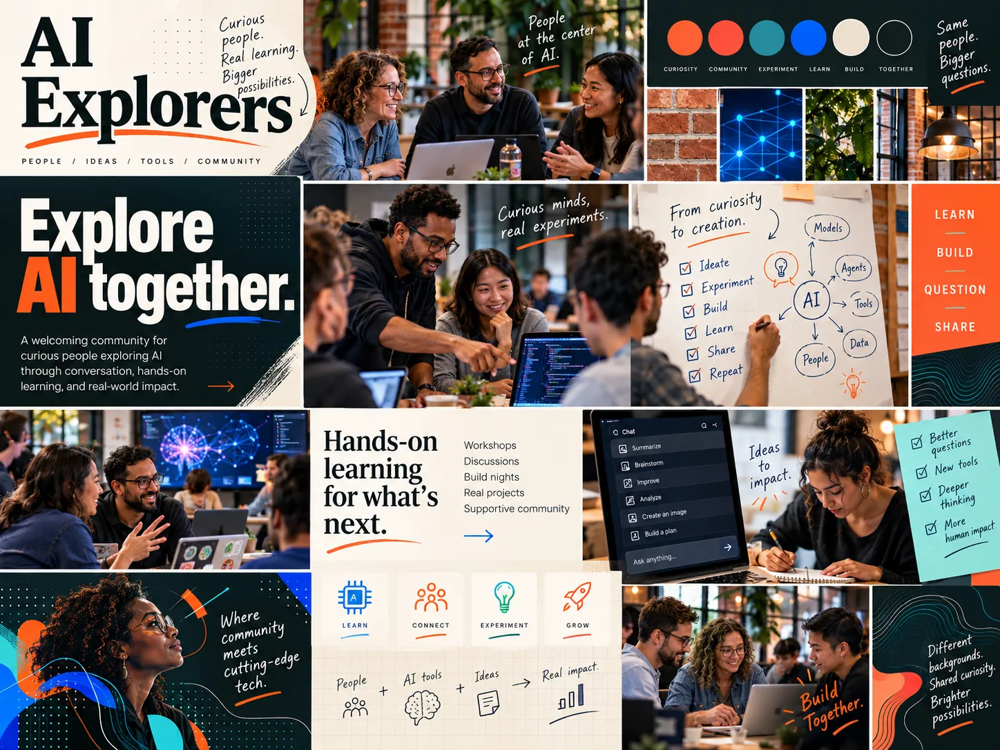
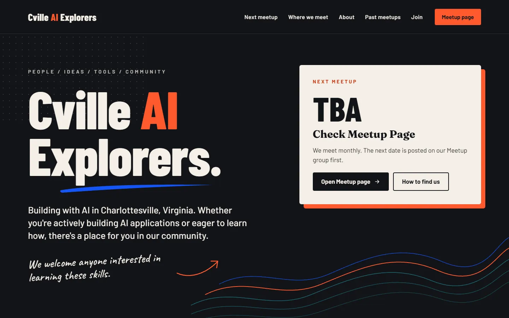

The journey
How Community Bulletin Board took shape
This team started from pictures, not code. The two mood boards they made in ChatGPT show the turn that set the design's character.
From qualities to a first board
They began with the current site, two reference sites they disliked, and a list of qualities: curious, learning-oriented, open, empowering, organic, member-driven, people-centered and connected to Charlottesville. The first spec framed the site as a warm local learning community, not a polished tech conference, and the first board made that tangible.

“Too touristy”
Looking at it, the team felt the board leaned toward tourism and local atmosphere and underplayed the energy of a group exploring new technology. They kept the people-with-laptops imagery and asked for more contrast, stronger type, brighter accents, visible AI and coding cues, and a more energetic composition.

From boards to build
They built the site in Claude Code from the boards and the spec. The build trades the boards' Lora and Inter for Barlow Condensed, Fraunces, Barlow and Caveat, and replaces the photos of people with hand-drawn marks.
